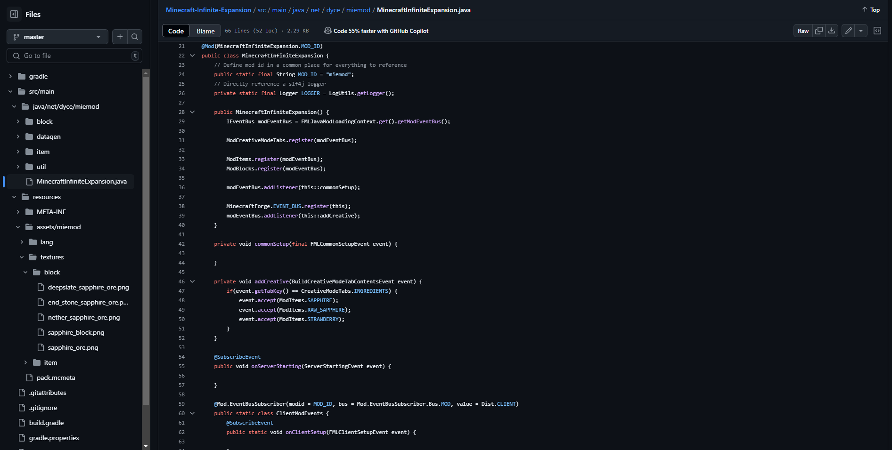

Hamid Javaheri
My Journey Begins Here
Explore My Work
As a passionate Computer/Software Engineer with a deep interest in Machine Learning, AI, and Database Systems, I am dedicated to leveraging cutting-edge technology to solve complex problems. My career ambition is to contribute to a major technology company, where I can make a meaningful impact, and eventually, to establish and lead my own company, shaping the future of innovation.
My life outside of work is equally vibrant and diverse. I have a profound love for music, which includes both playing various instruments and exploring different genres. Photography and videography are hobbies that allow me to capture and appreciate the beauty of the world around me. My athletic pursuits are extensive, ranging from advanced MMA martial arts to swimming, volleyball, and soccer, reflecting my commitment to physical fitness and teamwork. Additionally, I enjoy cooking, which provides a creative outlet and a way to unwind. Staying organized and multitasking are essential skills I apply in both my personal and professional life, while gaming and group interactions offer enjoyable ways to relax and connect with others. These varied interests not only enrich my life but also enhance my creativity and problem-solving abilities.

Python and Discord.py
Enhance your Discord server with AI-powered conversations and controls!
GithubChatGPT Discord Bot is a feature-rich Python-based bot that brings the power of OpenAI's ChatGPT right into your Discord server. Fully integrated with Discord, it offers an array of custom commands and server management capabilities.
This bot is perfect for Discord communities seeking to boost interactivity, automate tasks, and enhance user engagement with cutting-edge AI.

Python and Tkinter
Organize your folders/files with one click!
GithubSortify is a compact yet powerful Python application designed to streamline your digital workspace. With just a few clicks, you can select any folder on your system and instantly organize its contents into designated, pre-defined folders. You have the flexibility to choose between two modes:
This tool is perfect for users looking to effortlessly bring order to cluttered directories, making file management faster and more efficient.

Python and Tkinter
My first ever project, and most definitely the ugliest looking
Github

Java and an Unbelievable Amount Of Youtube Videos
Just a fun project for myself
Github